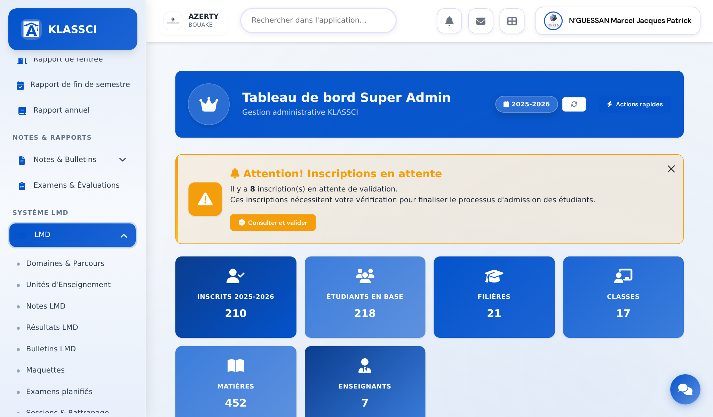
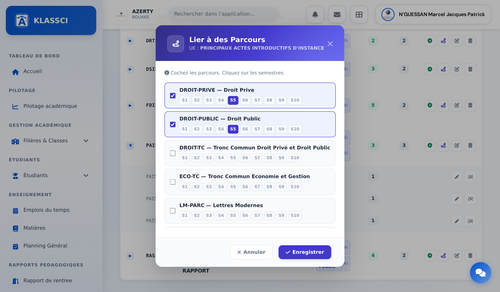
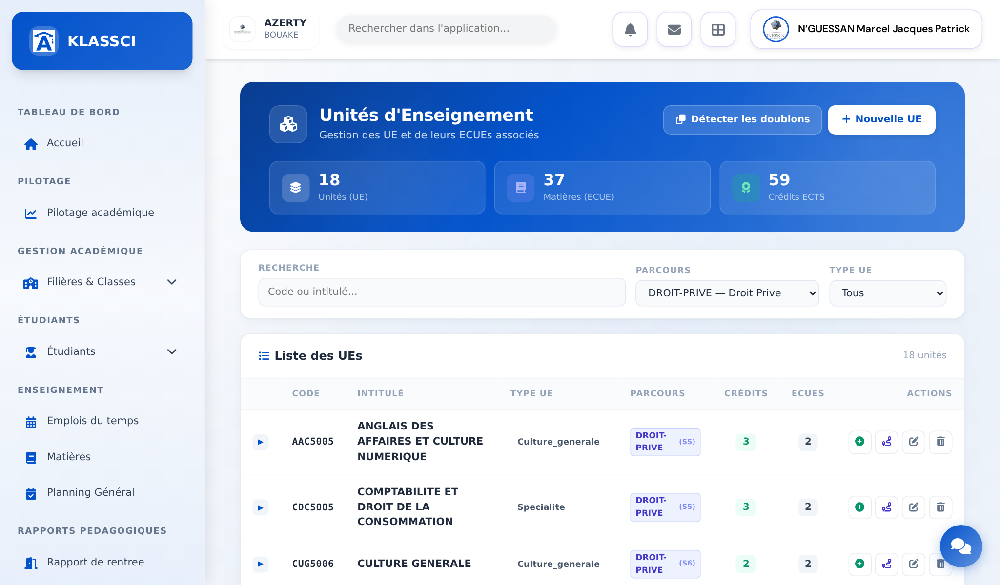
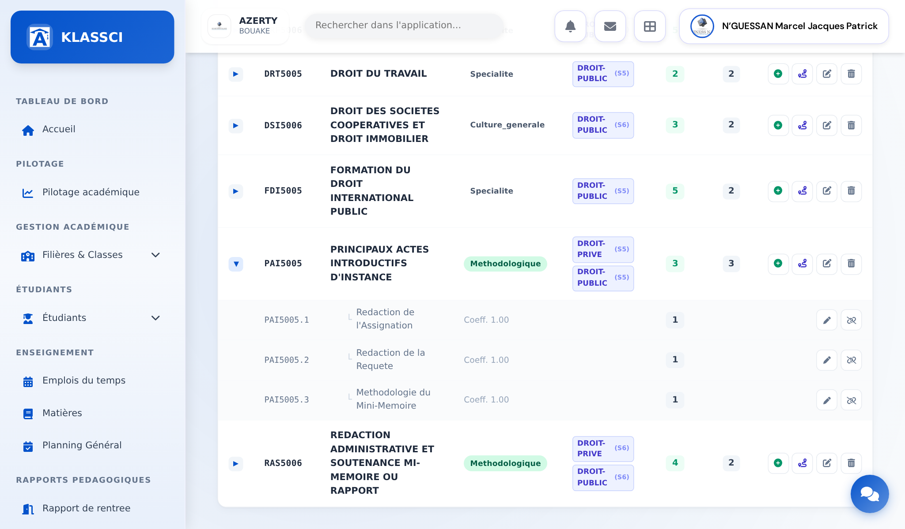
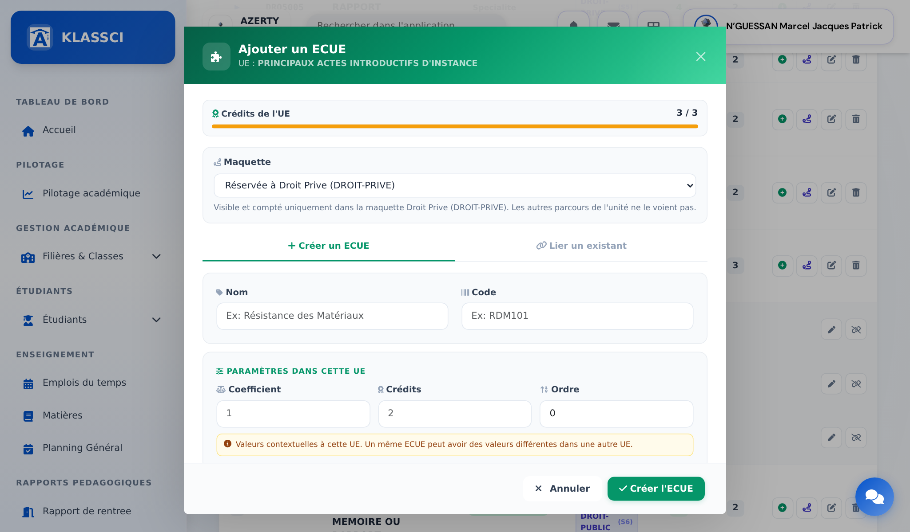
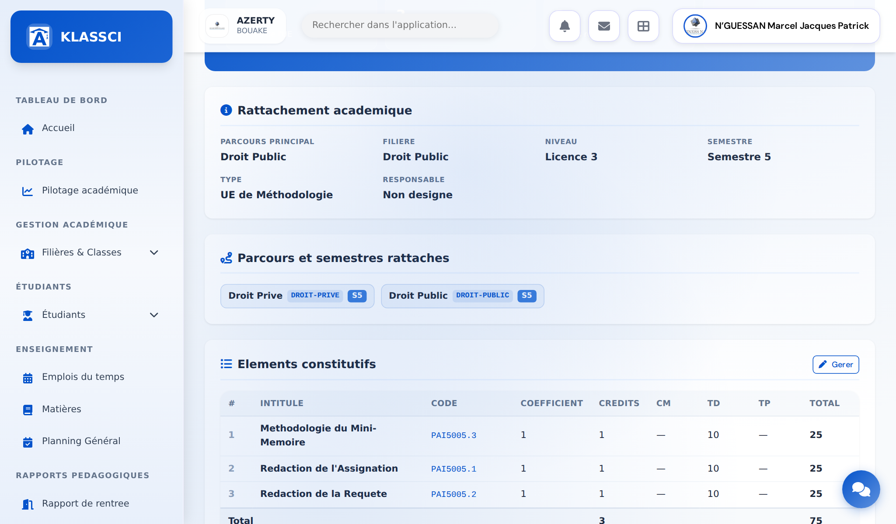

KLASSCI
Guide utilisateur · Système LMD
Une UE partagée, des ECUE propres à chaque parcours.
Comment une unité d’enseignement commune à deux parcours (Droit Privé et Droit Public, par exemple) peut porter une composition différente pour chacun d’eux, et comment l’écran des unités d’enseignement le fait, pas à pas.
01
Comprendre en une page
Une seule unité, plusieurs maquettes.
Dans KLASSCI, le code d’une unité d’enseignement est unique dans toute l’école. « Principaux actes introductifs d’instance » (PAI5005) est donc une seule et même unité, que l’étudiant soit en Droit Privé ou en Droit Public. Ce qui peut changer d’un parcours à l’autre, ce sont ses éléments constitutifs (les ECUE), leurs coefficients et leurs crédits.
1unité, un seul code, une seule fiche
Nparcours rattachés, chacun avec son semestre
1 + Ncompositions : la commune, plus une réservée par parcours qui le souhaite
Ce qui se partage et ce qui peut différer
| Porté par l’unité (identique partout) | Porté par la maquette du parcours (peut différer) |
|---|
| Le code, l’intitulé, le type d’UE (fondamentale, méthodologique…) | Le semestre où l’unité apparaît, son caractère optionnel, son ordre sur le bulletin |
| La fiche de l’unité et son responsable | La liste des éléments constitutifs, leur coefficient et leurs crédits |
| Le plafond de crédits de l’unité | Le total de crédits effectivement consommé, compté maquette par maquette |
Comment les deux compositions se combinent
Une unité porte toujours une composition commune : les éléments valables pour tous les parcours qui l’utilisent. Un parcours peut, en plus, réserver ses propres éléments ou surcharger un élément commun avec un autre coefficient. Partout où le parcours est connu, c’est cette composition-là qui s’applique : bulletins des étudiants, plannings, arbre des matières, écran des unités filtré sur le parcours.
Ce que cela garantit. Un élément réservé à Droit Privé n’entre pas dans la moyenne d’un étudiant de Droit Public. Un élément surchargé n’est jamais compté deux fois. Retirer un élément de la maquette Droit Privé ne le retire pas de Droit Public.
Les pages qui suivent montrent, sur des écrans réels, comment lire et entretenir ces maquettes, jusqu’à réserver un élément à un seul parcours.
02
Étape 1
1
Ouvrir la liste des unités d’enseignement
Dans le menu de gauche, descendez jusqu’à la section Système LMD, dépliez LMD puis choisissez Unités d’Enseignement. C’est l’écran de référence pour tout ce qui suit : rattacher une unité à ses parcours, lire sa composition, ajouter ou retirer un élément.

1
2
Tableau de bord administrateur, menu LMD déplié. Les entrées Domaines & Parcours, Unités d’Enseignement, Notes LMD, Bulletins LMD et Maquettes sont visibles.
1
Dépliez LMD dans la section Système LMD.
2
Cliquez sur Unités d’Enseignement. L’adresse de la page est /esbtp/lmd/ue.
03
Étape 2
2
Rattacher l’unité à chacun de ses parcours
Sur la ligne de l’unité, cliquez sur l’icône Lier à des parcours (la troisième action, en violet). Cochez chaque parcours qui suit cette unité et cliquez sur le semestre où elle est enseignée dans ce parcours. Les deux parcours peuvent la suivre au même semestre ou à des semestres différents.

1
2
3
Modal « Lier à des Parcours » de l’unité PAI5005 : Droit Privé et Droit Public cochés, semestre S5 sélectionné pour chacun.
1
Cochez le parcours. Les parcours déjà rattachés apparaissent cochés en tête de liste.
2
Cliquez sur le semestre. Un seul clic par parcours ; une unité suivie sur deux semestres se coche deux fois.
3
Enregistrer. Depuis septembre 2026, cet enregistrement ne remet plus à zéro le crédit, l’ordre ni le caractère optionnel déjà réglés sur les autres parcours.
04
Étape 3
3
Lire la composition d’une maquette
Le filtre Parcours, en haut de la liste, ne fait pas que trier : quand il est réglé sur un parcours, chaque unité affiche la composition de cette maquette-là, c’est-à-dire les éléments communs plus ceux que ce parcours a réservés. Sans filtre, l’écran montre tout, chaque élément une seule fois.

1
Filtre Parcours réglé sur « DROIT-PRIVE — Droit Prive ». Les compteurs du bandeau se recalculent sur ce parcours : 18 unités, 37 éléments, 59 crédits.
2
3
Ligne PAI5005 dépliée sous le filtre Droit Privé : trois éléments, coefficient 1, un crédit chacun.
1
Choisissez le parcours dans le filtre. La liste se recharge sans quitter la page.
2
Cliquez sur la flèche de la ligne pour déplier les éléments constitutifs de l’unité dans cette maquette.
3
Le bouton vert Ajouter un ECUE et, à côté, l’icône Lier à des parcours restent accessibles sur chaque ligne.
05
Étape 3 · suite
Le même contrôle, parcours par parcours.
Passez le filtre sur Droit Public et dépliez à nouveau PAI5005. Sur l’instance de démonstration, les trois éléments sont communs aux deux maquettes : la liste est donc identique. Le jour où un élément est réservé à Droit Privé, il disparaît de cette vue, et seulement de celle-ci.

1
Filtre Droit Public : PAI5005 porte les deux badges DROIT-PRIVE (S5) et DROIT-PUBLIC (S5) et les trois mêmes éléments.
1
La colonne Parcours affiche un badge par maquette rattachée, avec son semestre. Deux badges signifient une unité partagée.
À retenir. Ce que vous lisez sous un filtre est exactement ce que le bulletin d’un étudiant de ce parcours comptera. Vérifiez donc toujours une maquette sous son filtre, jamais dans la vue « Tous », qui mélange les compositions.
06
Étape 4
4
Ajouter ou modifier un élément constitutif
Le modal commence par la question qui compte : pour quelle maquette ? « Commune à tous les parcours de l’UE », ou réservée à l’un des parcours qui la suivent. Le choix est prérempli avec le filtre Parcours de la liste. Viennent ensuite les deux voies habituelles, Créer un ECUE ou Lier un existant, puis le coefficient, les crédits et l’ordre, qui valent dans cette unité.

1
2
3
4
Modal « Ajouter un ECUE » sur PAI5005, maquette réglée sur Droit Privé. Le texte sous le champ dit ce que le choix implique.
1
Maquette : laissez « Commune » pour un élément que tous les parcours partagent ; choisissez un parcours pour le lui réserver.
2
Créer un ECUE ou Lier un existant. En mode « Lier », la liste proposée dépend de la maquette choisie.
3
Coefficient, crédits et ordre. La jauge compte les crédits de la maquette visée, un élément une seule fois.
4
Créer l’ECUE. La liste se met à jour sans rechargement.
Modifier un élément ouvre le même modal, réglé sur la maquette de la ligne cliquée. Choisir un parcours sur un élément commun ne le déplace pas : cela crée une surcharge propre à ce parcours, avec ses valeurs, et la version commune reste en place pour les autres.
07
Étape 5
5
Réserver des éléments à un seul parcours
Filtrez la liste sur le parcours concerné, ajoutez l’élément avec la maquette préremplie sur ce parcours, et enregistrez. Dans la liste, chaque élément porte désormais un repère : Commun, ou le code du parcours qui le réserve. Sous la vue « Tous », un élément à la fois commun et surchargé apparaît deux fois, une ligne par version.
1
2
Liste sous le filtre Droit Privé : la ligne réservée porte le code du parcours, les lignes communes portent « Commun ».
1
Repère « Commun » : l’élément vaut pour tous les parcours de l’unité.
2
Repère au code du parcours : l’élément n’entre que dans cette maquette, au bulletin comme au planning.
Retirer un élément
Le bouton de retrait vise la maquette de la ligne cliquée, et elle seule. Retirer une version réservée laisse la version commune intacte ; retirer une version commune la retire de tous les parcours, ce que la confirmation rappelle. Si l’élément ne tient à l’unité que par une autre maquette, KLASSCI refuse et nomme cette maquette au lieu d’annoncer un retrait qui n’aurait rien retiré.
Maquettes importées. L’import d’une maquette pour un second parcours partage désormais l’unité au lieu de refuser : la fiche reste au premier parcours, le second reçoit son semestre et son crédit sur le lien, et ses éléments lui sont réservés. Seul un élément déjà rattaché à une autre unité reste refusé.
08
Étape 6
6
Vérifier la fiche de l’unité
La fiche récapitule le rattachement académique, la liste des parcours et semestres, et le tableau des éléments constitutifs avec leurs volumes horaires. C’est la page à ouvrir avant une réunion de maquette : elle tient sur un écran et se lit sans manipulation.

1
2
Fiche PAI5005 : parcours principal Droit Public, semestre 5 ; rattachements Droit Privé (S5) et Droit Public (S5) ; trois éléments, 3 crédits, 75 heures.
1
La section Parcours et semestres rattachés confirme le partage. Le « parcours principal » du bloc du dessus est une information héritée : c’est cette liste qui fait foi.
2
Gérer ouvre le formulaire complet de l’unité. Le tableau des éléments montre la composition complète, toutes maquettes confondues : pour la lecture d’une seule maquette, revenez à la liste filtrée de l’étape 3.
09
Aide-mémoire
Les questions qui reviennent.
| Faut-il créer deux unités, une par parcours ? | Non. Une seule unité, rattachée aux deux parcours. Deux unités au même intitulé finiraient en doublon, que la page « Détecter les doublons » signalerait. |
| Les deux parcours doivent-ils suivre l’unité au même semestre ? | Non. Le semestre se coche par parcours dans « Lier à des parcours ». |
| Pourquoi le tableau de la fiche montre-t-il des éléments absents du bulletin d’un étudiant ? | La fiche liste la composition complète. Le bulletin ne prend que la composition de la maquette de l’étudiant. Contrôlez sous le filtre Parcours. |
| La jauge de crédits refuse mon élément. | Elle compte l’ensemble de la maquette, communs et réservés, une seule fois chacun. Retirez ou réduisez un autre élément avant d’ajouter. |
| Puis-je supprimer une unité partagée ? | Non tant qu’elle figure dans plus d’une maquette. Le refus nomme les parcours concernés : retirez-la d’abord de chacun. |
| Un même élément peut-il avoir un coefficient différent selon le parcours ? | Oui. Modifiez-le sous le filtre de ce parcours, maquette réglée sur ce parcours : cela crée sa version propre, la commune reste pour les autres. |
| J’ai retiré un élément et il est toujours là. | Vous avez retiré une version (commune ou réservée) et il en existe une autre. Le repère de la ligne dit laquelle reste ; retirez-la sous sa maquette. |
Preuves d’écran
Toutes les captures de ce guide sont des écrans réels, pris le 10 septembre 2026 sur presentation.klassci.com avec un compte administrateur, sans retouche. Les repères numérotés et les cadres sont posés par-dessus.
| Page | Écran | Adresse |
|---|
| 3 | Tableau de bord, menu LMD déplié | /dashboard |
| 4 | Modal « Lier à des Parcours », unité PAI5005 | /esbtp/lmd/ue |
| 5 | Liste filtrée Droit Privé, ligne dépliée | /esbtp/lmd/ue?parcours_id=6 |
| 6 | Liste filtrée Droit Public, ligne dépliée | /esbtp/lmd/ue?parcours_id=7 |
| 7 | Modal « Ajouter un ECUE » avec le champ Maquette | /esbtp/lmd/ue |
| 8 | Liste filtrée avec les repères Commun / parcours | /esbtp/lmd/ue?parcours_id=6 |
| 9 | Fiche de l’unité PAI5005 | /esbtp/lmd/ue/166 |
10